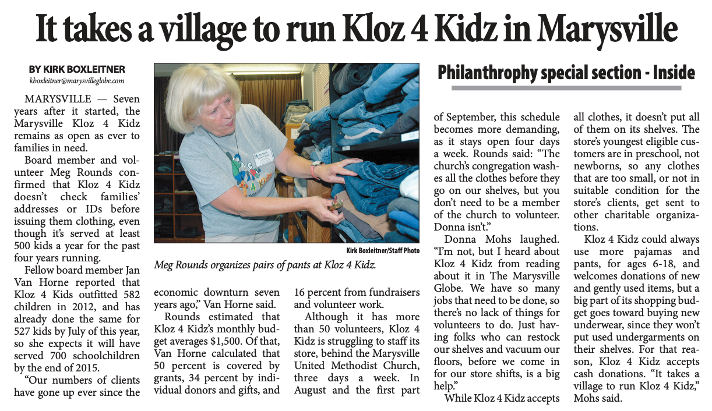

We are proud to serve Snohomish County families in a friendly, positive, affirming atmosphere.
Founded by educators with a belief that all schoolchildren deserve to feel good about their wardrobe, we are dedicated to providing kids from any family, regardless of income, a traditional school clothes shopping experience.
Press coverage from the Everett Herald. Click here to read the article
 View article
Kloz 4 Kidz is
a ministry of Marysville United Methodist Church
and the United Methodist Women.
©Copyright 2021-22 by Janet Raynor.
All rights reserved.
If you are in need of free clothing for your school-aged Snohomish County child or children, we are here to help. We have reopened for clothing pick-ups, but we are still unable to provide indoor shopping or a changing room space. Appointments will be held outdoors for the health and safety of our clients and volunteers.
Directions for our current appointment process are below. Before you begin, please have your child's clothing sizes available.
At this time, we are not providing jeans or coats. Coats are provided during the winter months and will be available beginning November 1. Jeans will be available again once we are able to to provide fitting rooms.